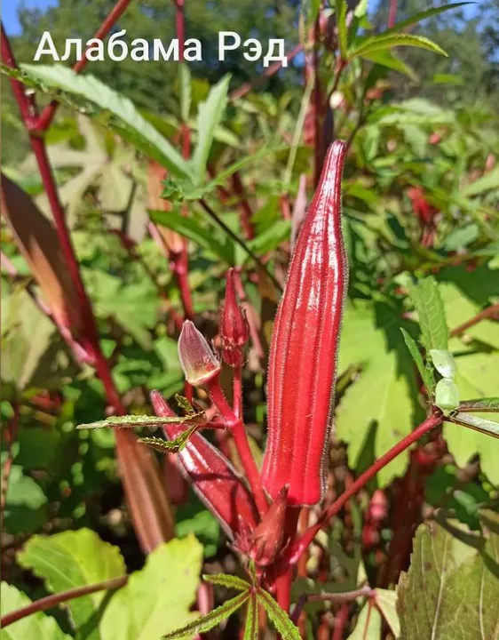
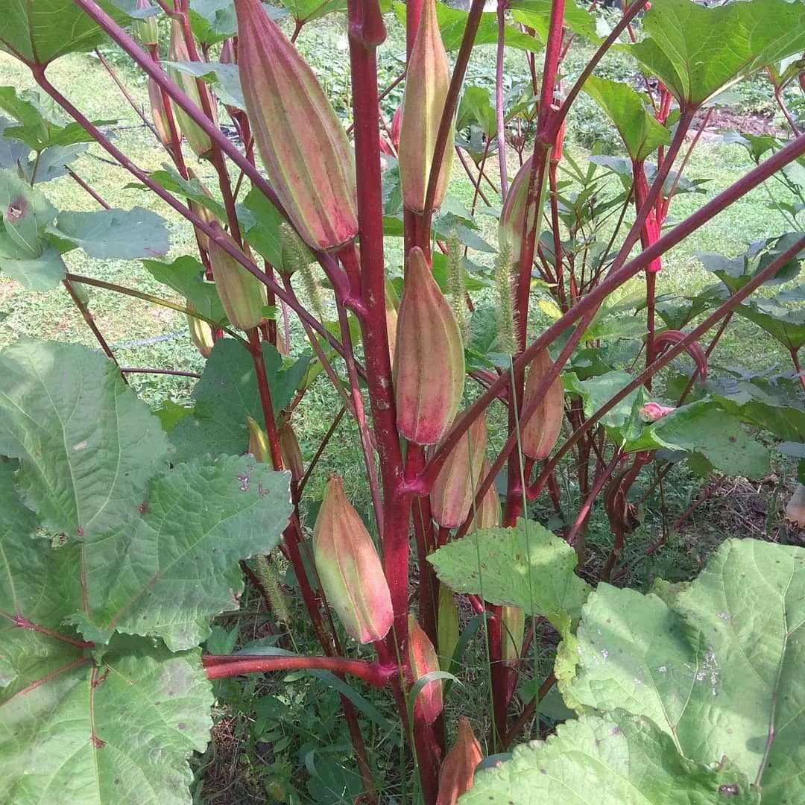
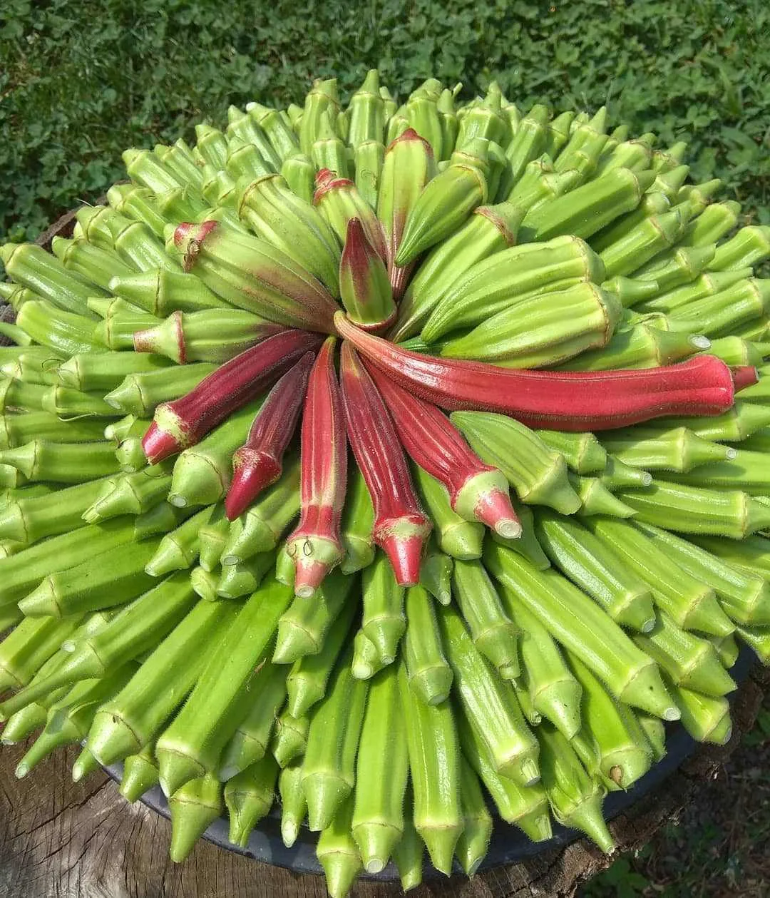
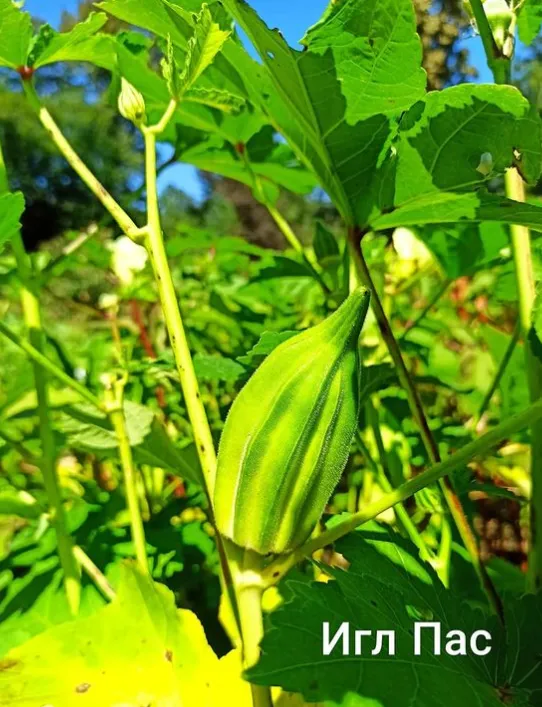
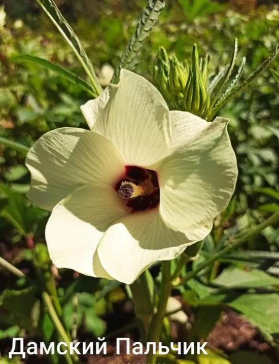
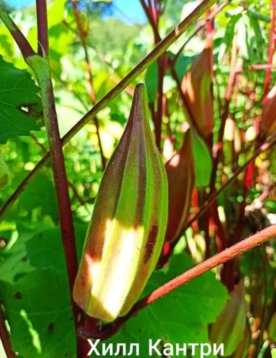
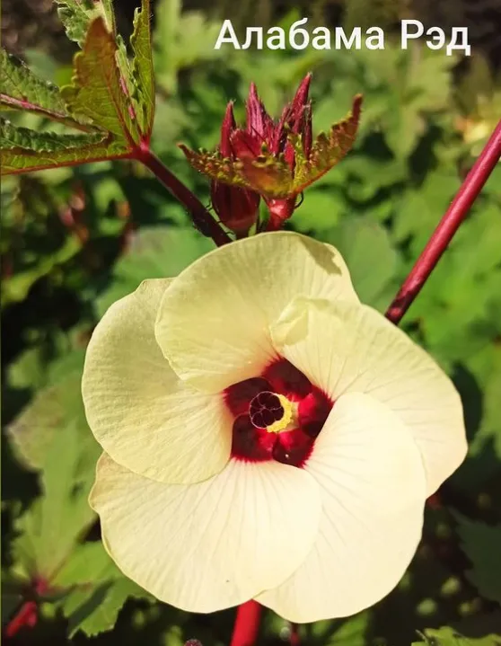
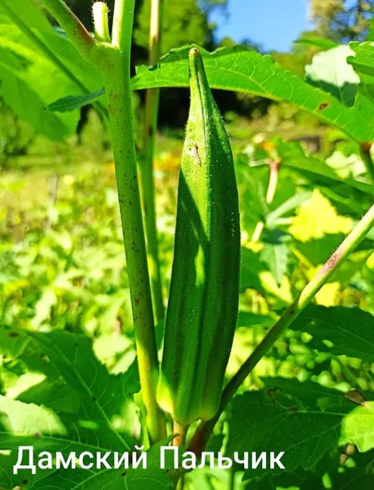

Дамские пальчики — нежные съедобные стручки, богатые витаминами и клетчаткой.
Преимущества культуры для вашего участка.
Бамия в разные сезоны: от всходов до сбора урожая.








Всё, что нужно знать о культуре: от посадки до хранения.
Бамия (Абельмош съедобный) — однолетнее овощное растение семейства Мальвовые.
Недозрелые стручки используют как приправу в супы и соусы.
Бамия требовательна к теплу. В средней полосе выращивают через 30-45 дневную рассаду.
Растёт на лёгких плодородных почвах. Семена прорастают при 20-22°C. Собирают в фазе 3-5-дневных завязей.
Недозрелые стручки добавляют в супы, соусы, жарят и тушат.
Да, она богата фолиевой кислотой, полезной для развития плода.
Стручки собирают в фазе 3-5-дневных завязей, пока они нежные.
Посадочный материал из коллекции Batatchudo и рекомендации по выращиванию.